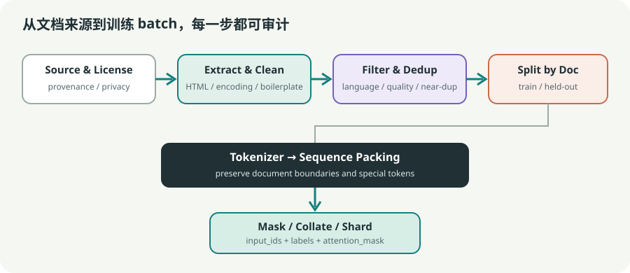

1. 数据流水线全景
一个可审计的预训练语料库，需要从原始文档一路追踪到模型输入。最基本的阶段包括来源登记、许可审查、正文抽取、文本规范化、语言与质量过滤、去重、数据集切分、tokenization、序列打包、遮盖采样、分片与版本记录。

RoBERTa 的语料是一个具体案例：作者在 BooksCorpus 与 English Wikipedia 之外，加入 CC-News、OpenWebText 和 Stories，将预训练文本扩展到约 160GB。这个数据构成描述的是该论文的英文实验，不是中文预训练语料的通用配比建议。
2. 来源、许可与隐私先于爬取规模
对每个数据源，至少记录：来源 URL 或数据集版本、下载时间、许可条款、允许的用途、采集方式、语言范围、个人信息风险、保留期限、删除请求机制和原始文档 ID。未经许可的网页抓取、私密聊天记录或受限制的数据，不会因为能被下载就自动成为可训练数据。
文档级 provenance 让团队能够回答：某个 token 来自哪里、哪个版本的语料包含它、哪些 checkpoint 使用过它、当来源授权变化时如何定位并重建训练集。对于含个人信息的语料，还需要最小化收集、去标识化、访问控制和敏感内容处理；不能把“公开可见”当成“无限制可训练”。
3. 清洗与质量过滤：删除噪声，也可能删除信息
网页正文抽取常见噪声包括导航栏、页脚、Cookie banner、重复菜单、脚本残留、HTML entity、控制字符和异常编码。清洗时要保存原始文本与处理日志，避免不可逆地丢失出处。
语言识别、乱码比例、过短/过长文档、重复标点、模板文本、链接密度和低信息量页面可以作为质量特征。也可以训练质量分类器或使用语言模型困惑度筛选，但这些信号都有偏差：高困惑度不一定是低质量，专业术语、方言、代码、低资源语言和非标准语体可能被误删。
因此过滤应按来源和语言分层抽样人工检查，并报告过滤前后各语言、各领域的 token 数和文档数。不要只给出一个“删除 30% 垃圾数据”的总数。
4. 精确去重与近重复去重不是同一问题
4.1 精确去重
先规范化可用于比较的文本，再对完整文档计算哈希。完全相同的内容可以用 SHA-256 等密码学哈希进行快速匹配。注意哈希应作用于确定版本的规范化文本，并保留 canonical document ID 与被合并记录的映射。
import hashlib
import re
def canonicalize(text: str) -> str:
text = text.replace("\r\n", "\n")
text = re.sub(r"[ \t]+", " ", text)
return text.strip()
def exact_fingerprint(text: str) -> str:
normalized = canonicalize(text)
return hashlib.sha256(normalized.encode("utf-8")).hexdigest()这段代码只识别规范化后完全相同的文本；它不会发现改写、模板变化、少量增删或同一新闻的转载版本。
4.2 近重复去重
近重复检测通常把文档拆成 shingles（例如连续 token n-gram），再用 MinHash/LSH 等近似方法召回候选对，最后计算 Jaccard 或编辑相似度进行确认。阈值越高，误删越少但漏掉的近重复越多；阈值越低，越容易误删主题相似但内容不同的文章。
5. 切分与污染检查：按文档隔离，不要先切块再随机分
若同一篇文章先被切成多个 chunk，再随机分到 train 和 validation，那么验证集可能只是在测试模型是否记住训练集中的相邻片段。对下游 benchmark，也要检查其原文、镜像、近重复和答案内容是否已进入预训练语料。
推荐顺序是：先按文档或来源分组建立训练与 held-out 文档清单，再 tokenize 和 chunk。需要时间外推时按时间切分；需要跨站点泛化时按域名切分；需要跨用户泛化时按用户 ID 切分。不同评测目标需要不同隔离单位。
预训练语料通常不会用下游测试集做监督，但公开 benchmark 可能已出现在网页语料中。应记录污染检测方法与局限；不能只靠精确字符串匹配声称“完全没有 benchmark contamination”。
6. 文档边界与序列打包：FULL-SENTENCES 和 DOC-SENTENCES
Transformer 的注意力会在同一输入序列的 token 之间交换信息。如果把不同文档直接拼在一起，却没有明确边界标记，模型就可能把两个互不相关的文档当作连续上下文。
RoBERTa 比较了两种不使用 NSP 的完整句子打包方式：
- FULL-SENTENCES：按句子顺序把完整句子打包到目标长度；如果需要跨文档填充，会插入额外的 separator token。
- DOC-SENTENCES：只在同一文档内打包，不跨文档；文档末尾可能留下较短序列，因此通过动态 batch size 保持每个 batch 的 token 数。
二者的选择不是纯性能参数：FULL-SENTENCES 更容易形成稳定的大 batch；DOC-SENTENCES 保留更严格的文档隔离。具体实现应记录是否跨文档、跨文档分隔符、句子切分器、最大序列长度和丢弃尾部的策略。
7. 动态遮盖与 Data Collator
静态遮盖把被遮盖的输入和标签提前写入训练样本；动态遮盖则把原始 input IDs 交给 collator，在组 batch 时生成新的受损输入与 MLM labels。动态遮盖可以让同一序列在不同呈现中使用不同 mask pattern。
实现时至少要处理：特殊 token 不能被选为普通 MLM 目标；padding 位置不能进入 loss；被选位置的标签必须是原 token ID；未选位置的标签应设为 loss 的 ignore index（常见为 -100）；80/10/10 的分母是被选目标位置；随机替换策略应与所复现的论文/官方实现一致。
# Hugging Face 风格的动态 MLM collator（示意）
from transformers import DataCollatorForLanguageModeling
mlm_collator = DataCollatorForLanguageModeling(
tokenizer=tokenizer,
mlm=True,
mlm_probability=0.15,
)
# Dataset 只保存原始 input_ids 等字段；
# 每次 collator 组 batch 时生成 input_ids 与 labels。不同 Transformers 版本对随机 token 采样、whole-word masking 和特殊 token 排除细节可能有差异。若要精确复现 BERT 或 RoBERTa，必须检查当前版本的源码，并固定依赖版本；不能仅凭参数名 mlm_probability=0.15 就声称复现了全部原论文设置。
8. 数据验收：看分布，不只看总 token 数
一个最低限度的数据质量仪表盘应包含：
- 来源与许可状态：每个来源的文档数、token 数、版本、授权状态。
- 语言与领域：语言比例、领域比例、时间分布、来源集中度。
- 清洗与去重：抽取失败率、空文档率、精确重复率、近重复率、过滤前后变化。
- Tokenizer：平均 token/字符比、[UNK] 比例、特殊 token 比例、长度分布。
- 打包：有效 token 利用率、padding 比例、跨文档比例、被丢弃 token 数。
- 训练验证：held-out MLM loss/perplexity 趋势、不同来源分层指标、benchmark 污染抽检。
当一个来源的 token 数占比极高时，模型会被该来源的主题、语言风格和模板主导。混合语料的采样权重需要通过验证集和目标任务来校准；不能把某篇英文论文的 160GB 数据构成直接当成中文训练配比。
9. 交互：定位数据流水线中的故障
选择一个数据问题
每种问题对应不同的审计指标和修复方式。
症状：同一新闻被镜像站点和转载站重复收录。 风险：模型反复看到相同文本，训练 token 数被虚增，数据分布偏向重复内容。 检查：精确 hash + 近重复候选召回 + 人工抽检。 修复：保留 canonical 文档 ID，记录被合并来源与去重阈值。
10. 交互二：去重、遮盖与打包账本
三个状态分别演示近重复判定的集合运算、MLM 遮盖计数的分母、以及序列打包的槽位利用率。数字均为教学示意，不代表任何真实语料库或 checkpoint 配置。
集合 / 遮盖 / 打包
固定教学数字，切换状态查看算术来源。
A={1,2,3,4,5}，B={3,4,5,6,7}：交∩=3，并∪=7，J=3/7≈0.4286。
完全相同副本：∩=∪=5，J=5/5=1。
两篇无关文档 shingle 几乎不重叠，J 接近 0。上述算术在 examples/finetuning_contract_lab.py 的 jaccard、mlm_replace_counts 与 packing_utilization 中实现，并由对应单测断言。
关键结论
- 语料来源、许可、清洗、去重、切分、打包和遮盖都是模型输入定义的一部分。
- 精确去重与近重复去重不同；近重复阈值必须抽样验证误删和漏删。
- 先按文档/用户/时间等评测单位切分，再 chunk，才能减少数据泄漏。
- FULL-SENTENCES 与 DOC-SENTENCES 的核心差异是能否跨文档打包；边界必须显式表示。
- 动态 MLM collator 需要正确处理特殊 token、padding、labels ignore index 和 80/10/10。
原始资料与工程文档
- Liu et al., RoBERTa, §3.1–3.2、Tables 1–2（数据、输入打包与动态遮盖）。
- Google Research, BERT create_pretraining_data.py。
- Hugging Face, Data collators（版本固定为 4.46.3）。
- Common Crawl, Common Crawl 数据与使用说明。